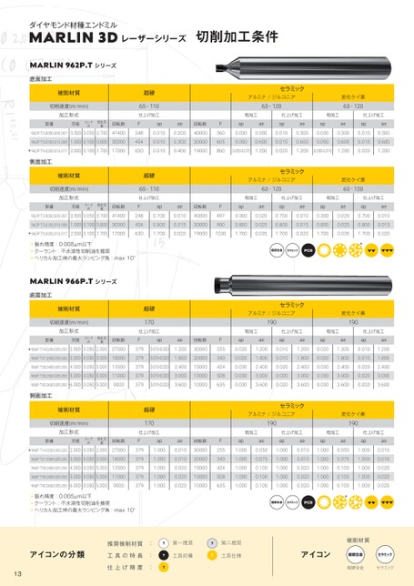

p.13切削加工条件表

ダイヤモンド材種エンドミル
MARLIN3Dレーザーシリーズ MARLIN3Dレーザーシリーズ 切削加工条件 切削加工条件
MARLIN962P.Tシリーズ
底面加工
被削材質 超硬 被削材質 超硬 セラミック セラミック
アルミナ/ジルコニア 炭化ケイ素 アルミナ/ジルコニア
切削速度(m/min) 65-110 切削速度(m/min) 65-110 63-120 63-120 63-120
加工形式 仕上げ加工 加工形式 仕上げ加工 粗加工 仕上げ加工 粗加工 粗加工 仕上げ加工 仕上げ加工
型番 刃径コーナ 切れ刃 回転数 型番 ap 刃径コーナ ae 回転数 切れ刃 回転数 ap ap ae ae ap 回転数 ae ap ap ae ae ap ap ae ae
962P.T3.0050.005.0070.5000.0500.70041400 962P.T3.0050.005.007 248 0.010 0.5000.050 0.20040000 0.700 41400 360 248 0.030 0.010 0.300 0.20040000 0.010 0.300 360 0.030 0.0300.300 0.300 0.0100.300 0.010 0.300
962P.T5.0100.010.0081.0000.1000.80030000 962P.T5.0100.010.008 454 0.010 1.0000.100 0.30030000 0.800 30000 605 454 0.050 0.010 0.600 0.30030000 0.015 0.600 605 0.050 0.0500.600 0.600 0.0150.600 0.015 0.600
* 962P.T9.0200.010.0172.0000.1001.70017000 * 962P.T9.0200.010.017 630 0.010 2.0000.100 0.40019000 1.700 17000 860 0.050-0.070 630 0.010 1.200 0.40019000 0.020 1.2000.050-0.070 860 0.050-0.070 1.200 1.200 0.0201.200 0.020 1.2000.050-0.070
側面加工
被削材質 超硬 被削材質 超硬 セラミック セラミック
アルミナ/ジルコニア 炭化ケイ素 アルミナ/ジルコニア
切削速度(m/min) 65-110 切削速度(m/min) 65-110 63-120 63-120 63-120
加工形式 仕上げ加工 加工形式 仕上げ加工 粗加工 仕上げ加工 粗加工 粗加工 仕上げ加工 仕上げ加工
型番 刃径コーナ 切れ刃 回転数 型番 ap 刃径コーナ ae 回転数 切れ刃 回転数 ap ap ae ae ap 回転数 ae ap ap ae ae ap ap ae ae
962P.T3.0050.005.0070.5000.0500.70041400 962P.T3.0050.005.007 248 0.700 0.5000.050 0.01040000 0.700 41400 497 248 0.300 0.700 0.020 0.01040000 0.700 0.010 497 0.300 0.3000.020 0.020 0.7000.010 0.700 0.010
962P.T5.0100.010.0081.0000.1000.80030000 962P.T5.0100.010.008 454 0.800 1.0000.100 0.01530000 0.800 30000 900 454 0.800 0.800 0.025 0.01530000 0.800 0.015 900 0.800 0.8000.025 0.025 0.8000.015 0.800 0.015
* 962P.T9.0200.010.0172.0000.1001.70017000 * 962P.T9.0200.010.017 630 1.700 2.0000.100 0.02019000 1.700 17000 1030 630 1.700 1.700 0.035 0.020190001030 1.700 0.020 1.700 1.7000.035 0.035 1.7000.020 1.700 0.020
振れ精度:0.005μm以下 振れ精度:0.005μm以下 *
クーラント:不水溶性切削油を推奨 クーラント:不水溶性切削油を推奨 超硬合金 セラミック PCD 超硬合金 セラミック PCD
ヘリカル加工時の最大ランピング角:max10°
MARLIN966P.Tシリーズ
底面加工
被削材質 超硬 被削材質 超硬 セラミック セラミック
アルミナ/ジルコニア 炭化ケイ素 アルミナ/ジルコニア
切削速度(m/min) 170 切削速度(m/min) 170 190 190 190
加工形式 仕上げ加工 加工形式 仕上げ加工 粗加工 仕上げ加工 粗加工 粗加工 仕上げ加工 仕上げ加工
型番 刃径コーナ 切れ刃 回転数 型番 ap 刃径コーナ ae 回転数 切れ刃 回転数 ap ap ae ae ap 回転数 ae ap ap ae ae ap ap ae ae
* 966P.T14.0200.005.0202.0000.0502.00027000 * 966P.T14.0200.005.0202.000 3790.010-0.020 1.20030000 0.0502.000 27000 255 379 0.020 0.010-0.020 1.200 1.20030000 0.010 1.2000.020 255 0.020 1.200 1.200 0.0101.200 0.010 1.200
966P.T21.0300.005.0303.0000.0503.00018000 966P.T21.0300.005.0303.000 3790.010-0.0201.80020000 0.0503.000 18000 340 379 0.020 0.010-0.020 1.800 1.80020000 0.010 1.8000.020 340 0.020 1.800 1.800 0.0101.800 0.010 1.800
966P.T28.0400.005.0504.0000.0505.00013500 966P.T28.0400.005.0504.000 3790.010-0.0202.40015000 0.0505.000 13500 424 379 0.030 0.010-0.020 2.400 2.40015000 0.020 2.4000.030 424 0.030 2.400 2.400 0.0202.400 0.020 2.400
966P.T35.0500.005.0505.0000.0505.00011000 966P.T35.0500.005.0505.000 3790.010-0.0203.00013000 0.0505.000 11000 508 379 0.030 0.010-0.020 3.000 3.00013000 0.020 3.0000.030 508 0.030 3.000 3.000 0.0203.000 0.020 3.000
966P.T42.0600.005.0506.0000.0505.0009000 966P.T42.0600.005.0506.000 3790.010-0.0203.60010000 0.0505.000 9000 635 379 0.030 0.010-0.020 3.600 3.60010000 0.020 3.6000.030 635 0.030 3.600 3.600 0.0203.600 0.020 3.600
側面加工
被削材質 超硬 被削材質 超硬 セラミック セラミック
アルミナ/ジルコニア 炭化ケイ素 アルミナ/ジルコニア
切削速度(m/min) 170 切削速度(m/min) 170 190 190 190
加工形式 仕上げ加工 加工形式 仕上げ加工 粗加工 仕上げ加工 粗加工 粗加工 仕上げ加工 仕上げ加工
型番 刃径コーナ 切れ刃 回転数 型番 ap 刃径コーナ ae 回転数 切れ刃 回転数 ap ap ae ae ap 回転数 ae ap ap ae ae ap ap ae ae
* 966P.T14.0200.005.0202.0000.0502.00027000 * 966P.T14.0200.005.020 379 1.000 2.000 0.01030000 0.0502.000 27000 255 379 1.000 1.000 0.050 0.01030000 1.000 0.0101.000 255 1.000 0.050 0.050 1.0000.010 1.000 0.010
966P.T21.0300.005.0303.0000.0503.00018000 966P.T21.0300.005.030 379 1.000 3.000 0.01020000 0.0503.000 18000 340 379 1.000 1.000 0.075 0.01020000 1.000 0.0101.000 340 1.000 0.075 0.075 1.0000.010 1.000 0.010
966P.T28.0400.005.0504.0000.0505.00013500 966P.T28.0400.005.050 379 1.000 4.000 0.02015000 0.0505.000 13500 424 379 1.000 1.000 0.100 0.02015000 1.000 0.0201.000 424 1.000 0.100 0.100 1.0000.020 1.000 0.020
966P.T35.0500.005.0505.0000.0505.00011000 966P.T35.0500.005.0501.000 379 5.000 0.02013000 0.0505.000 11000 508 379 1.000 1.000 0.100 0.02013000 1.000 0.0201.000 508 1.000 0.100 0.100 1.0000.020 1.000 0.020
966P.T42.0600.005.0506.0000.0505.0009000 966P.T42.0600.005.050 379 1.000 6.000 0.02010000 0.0505.000 9000 635 379 1.000 1.000 0.100 0.02010000 1.000 0.0201.000 635 1.000 0.100 0.100 1.0000.020 1.000 0.020
振れ精度:0.005μm以下 振れ精度:0.005μm以下 *
クーラント:不水溶性切削油を推奨 クーラント:不水溶性切削油を推奨 超硬合金 セラミック PCD 超硬合金 セラミック PCD
ヘリカル加工時の最大ランピング角:max10°
推奨被削材質 : 第一推奨 推奨被削材質 第二推奨 : 第一推奨 第二推奨 被削材質
アイコンの分類 工具の特長 アイコンの分類 : 工具材種 工具の特長 工具仕様 : 工具材種 アイコン 工具仕様 超硬合金 セラミック アイコン
仕上げ精度 : 仕上げ精度 : 超硬合金 セラミック
13